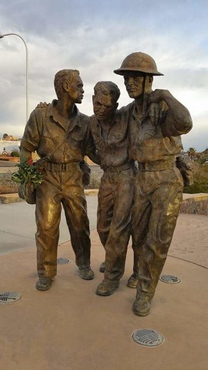

Pearl Harbor e Bataan
Sempre muito pouco, sempre muito tarde!

A Batalha de Kelibia Point
Sob a imposição do dever.

No Vale de Ia Drang
"Ainda que eu ande pelo vale da sombra da morte..."

Porque a história do homem é a história de suas guerras.
Sempre muito pouco, sempre muito tarde!

Sob a imposição do dever.
"Ainda que eu ande pelo vale da sombra da morte..."